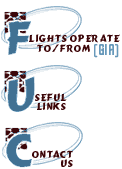

|
Thousands of Palestinians and
guests participated Tuesday24, Nov.1998, in what was dubbed as "historic day for
Palestine " - The inauguration of the first Palestinian Airport in Gaza strip. The opening of the airport, which can receive small and large airplanes, is a landmark in the Palestinian struggle for independence. President Yasser Arafat signaled the
opening with a speech ,"I declare that the opening of the airport is one of our
initial steps to declare the Palestinian State with Jerusalem as its capital." |
Nine airplanes landed on the
opening day. The first airplane was Egyptian. Morocco, which donated furniture to the
airport, also sent an airplane. Late King Husien's son, Faisal, headed a large
Jordanian delegation. Special European Union for peace envoy Miguel Moratinos also took
part in the ceremony. Gaza International Airport started operations by Palestinian Airlines, Egypt Air, Royal Jordanian, and Royal Air Maroc. |